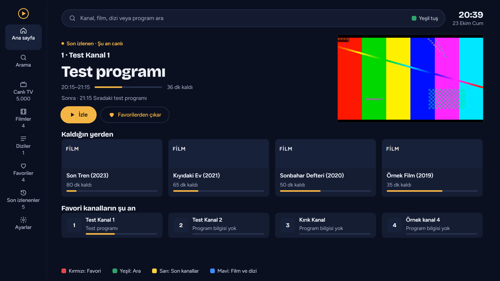
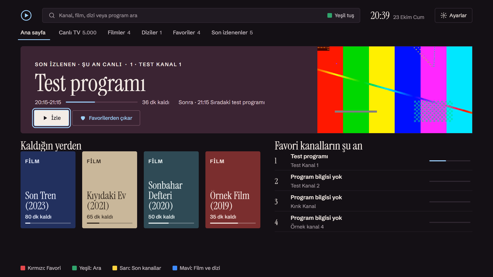
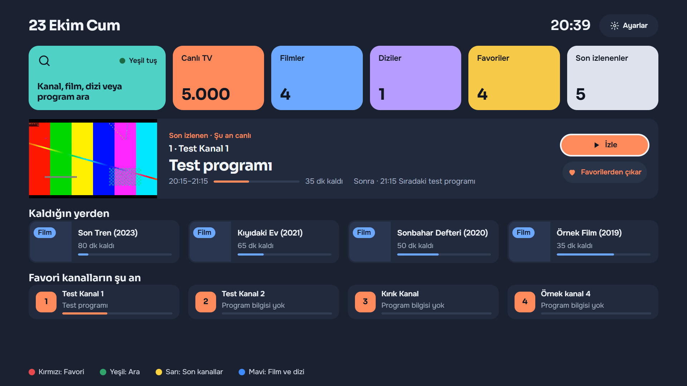
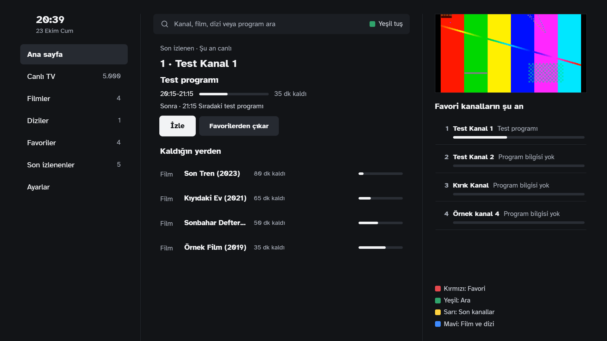
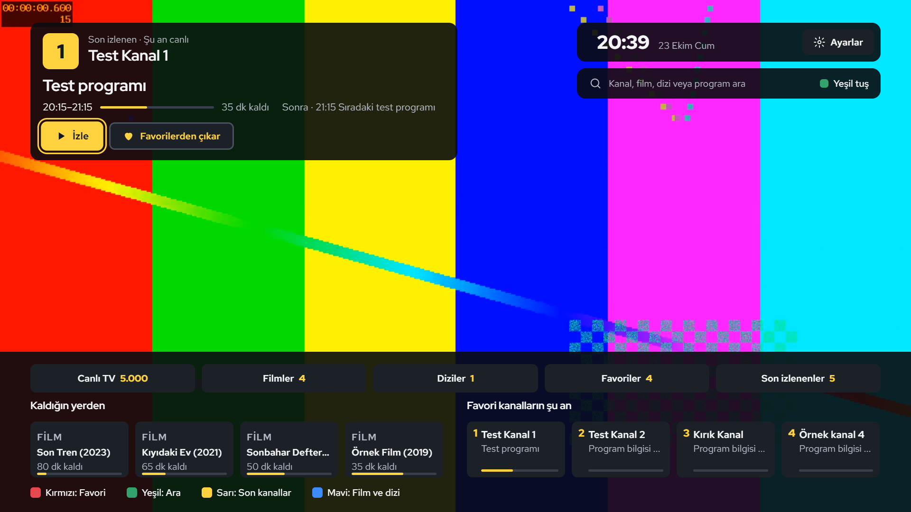
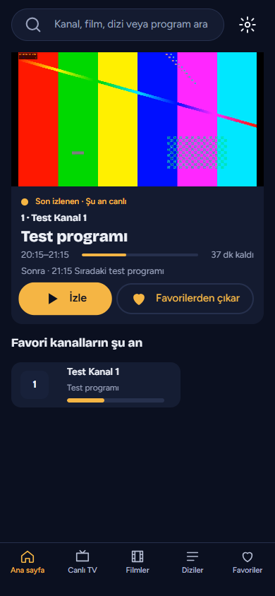

IPTV aboneliğin, kumandanın ucunda.
Bee Cast; Xtream, M3U ve MAC portalı listelerini oynatan bir uygulamadır. Sağlayıcından aldığın bilgileri girersin, canlı TV, film ve diziler kendi listenden gelir.
Uygulamada hazır kanal ya da içerik yoktur ve satılmaz.





BEŞ GÖRÜNÜM, AYNI UYGULAMA
Ok tuşlarıyla da değişir.
Gece salonuSinematik, sakin, kehribar vurgu.
Neler var
Üç metre öteden okunur, tek elle kullanılır.
- Canlı TV ve program rehberi
- Kategoriler, şu an ve sıradaki program. Yayın koparsa uygulama kendisi yeniden bağlanır.
- Film ve diziler
- Kaldığın yerden devam, sıradaki bölüm, özet, yönetmen ve oyuncular.
- Ses ve altyazı dili
- İzlemeden önce ya da izlerken seçilir, film ve dizi başına hatırlanır.
- Arama
- Kanal, film, dizi ve program adında; Türkçe karakter yazmasan da bulur.
- Yazı boyutu
- Normal, Büyük ve Çok büyük. Tasarım üç boyutta da bozulmaz.
- Ebeveyn kilidi
- Sağlayıcının yetişkin olarak işaretlediği içerik PIN olmadan görünmez.
- Favoriler ve son izlenenler
- Kırmızı tuşla favoriye ekle, sarı tuşla son kanallara dön.
- Altı dil
- Türkçe, English, Deutsch, Français, Español, العربية.
Nerede çalışır
Önce televizyon.
- Samsung Smart TV Mağazaya hazırlanıyor
- Android TV ve Google TV Hazırlanıyor
- Telefon ve tablet Planlanıyor

İçerik hakkında
Bee Cast bir oynatıcıdır, yayıncı değil.
Uygulama hiçbir kanal, film, dizi ya da playlist içermez, satmaz, önermez. Oynattığı her şey senin eklediğin listeden gelir.
Yalnızca izleme hakkına sahip olduğun içeriği ekle. Listenin içeriğinden ve yasallığından sağlayıcın sorumludur.
Destek
Bir sorun mu var?
- Listem yüklenmiyor.
- Sunucu adresini, kullanıcı adını ve şifreyi sağlayıcının verdiği gibi gir. Uygulama hatanın nedenini ekranda yazar; sağlayıcıya ulaşılamıyorsa ya da hesabın süresi dolmuşsa bunu söyler.
- Bir kanal açılmıyor.
- Kanalı sağlayıcı yayınlamıyor olabilir. Aynı kanalı birkaç dakika sonra yeniden dene; başka kanallar açılıyorsa sorun büyük ihtimalle o yayındadır.
- Kanalları siz mi veriyorsunuz?
- Hayır. Bee Cast içerik sunmaz; IPTV aboneliğini bir sağlayıcıdan alman gerekir.
Yazarken televizyonunun modelini, uygulama sürümünü (Ayarlar › Hakkında) ve ne yaptığında ne olduğunu ekle.
ahmetunaluzun@gmail.com